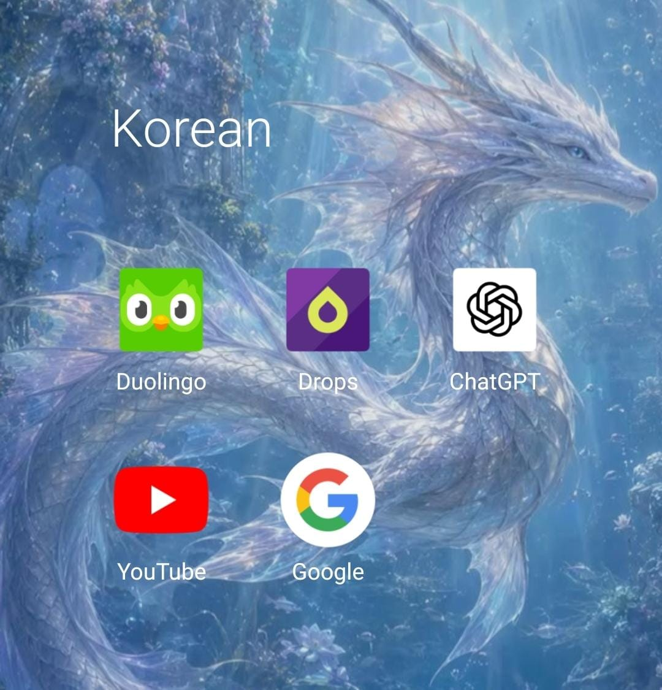
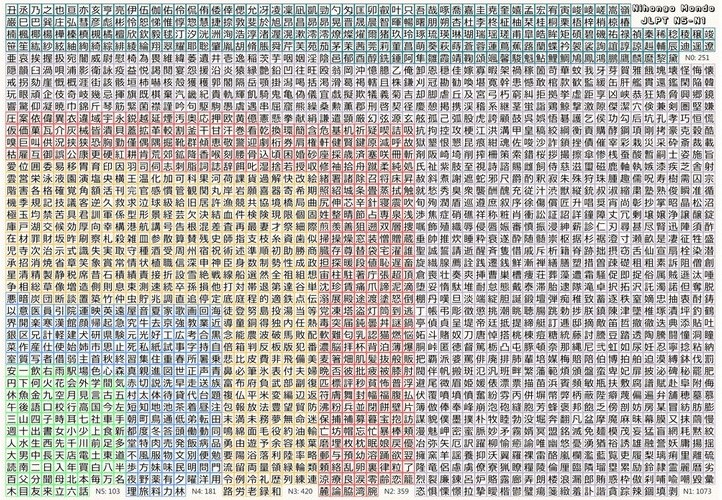
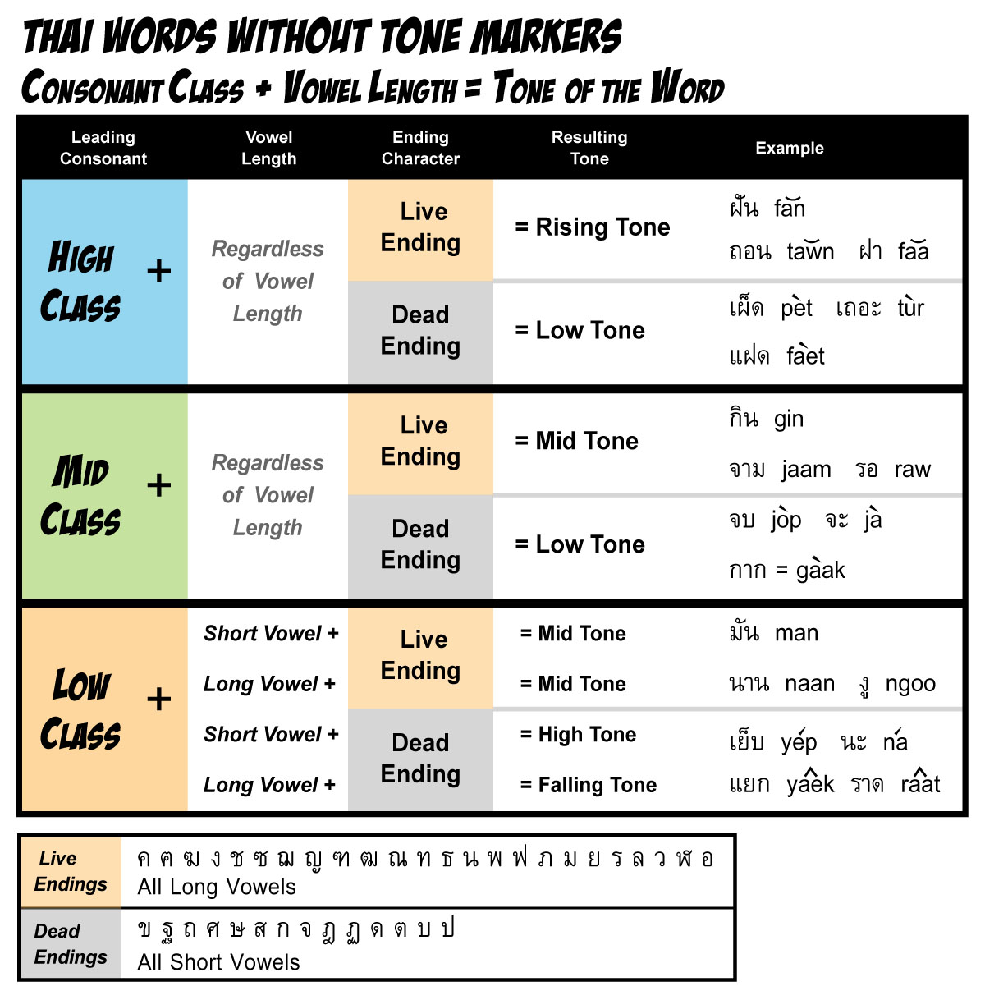
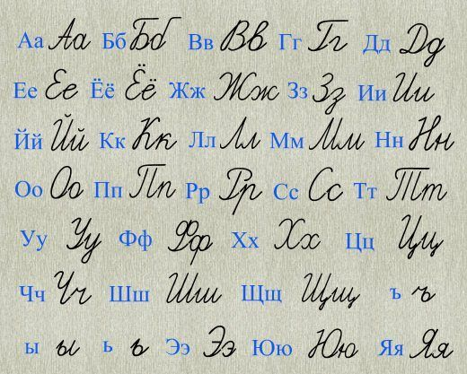

A slightly chaotic history of me learning languages
About Me
Hi, I'm Hemani. I've been interested in languages since I don't even know when. I keep exploring different languages and learn them till I lose interest. Read ahead to know more about my journey!
The Base
Hindi
My native language. It was probably the first language I heard when I was born. In school, I had it as a subject till grade 9.
English
A language I learned alongside Hindi in school and everyday life. Unlike the other languages on this page, I never really had a "starting point" for English, it just gradually became part of my everyday life.
The Journey
My Language Learning Timeline
Language
When I started
Current status
Urdu
Around 2017 or 2018
Explored casually
Bengali
During childhood
Know a few phrases
Spanish
Around age 9 (2018); formal study from grade 6 (2019)
Paused around early B1
Korean
2020
Paused; some understanding remains
Japanese
2021
Paused at beginner level
Tagalog
2023
Explored a bit
Thai
2024 (for 2 days)
Tried briefly
Chinese
2024
Still learning; around A2–B1
Russian
Planned for 2026
Explored the alphabet
Urdu
Why I started
It was around when I was 8 or 9 when I wanted to learn Urdu. The reason? I felt it was cool and aesthetic, and i wanted to be cool and aesthetic as well.
How I learned
I used to search up words on google and listen to the Urdu conversations around me. Sometimes, I would come and discuss it with my grandma, who had studied Urdu a little. She used to tell me how she studied the Urdu script. Good ol' days. :')
Bengali
Why I started
I started learning Bengali because my sister and I had a pair of Bengali siblings as our friends.
How I learned
Hehe- My way of learning was very dumb. I would learn random phrases, check their pronunciation on Google, write them down and memorise them.
How far I got
Yep, I didn't really learn anything by doing that. But I must say, it was a fair try atleast.
Spanish
Why I started
I started exploring languages around grade 5, when I was about 10, partly because of the whole "I know this many languages" thing and wanting to look a bit intelligent. Around that time, my school started giving us trials of the three languages it offered apart from Hindi and English: Sanskrit, Spanish and German. Coincidentally, I was already trying to learn Spanish by myself when we had the Spanish trial. I basically liked the feeling of already knowing everything, so I decided to go with Spanish. It was also the easiest one for me out of the three options.
How I learned
I studied Spanish in school from grade 6 to 10, and also studied topics by myself through YouTube (BaseLang), Drops and Busuu. Busuu had proper courses divided into levels like A1, A2, B1, B2 and C1 which was cool coz I could track which level I'm at currently.
What happened?
I stopped learning Spanish after grade 10 because of JEE preparation. By the time I stopped in 2024, I had completed around one or two units of the B1 course on Busuu. I haven't practised much since, so I'm definitely rusty now.
Korean

My Korean learning resources
Why I started
In 2020, I started learning Korean because I was getting into K-pop. I thought, "If I could understand all this without the need of subtitles, it would be so cool and nice!" And welp, there we go.
How I learned
Korean was the first language I completely studied by myself. It made me explore tons of apps to figure out a way to self-study it properly. I chose Duolingo for consistency, Drops for vocabulary, and YouTube and Google for tougher topics. I tried Busuu as well because I wanted something more structured, almost like following a textbook. Later, I also started using ChatGPT, which is a pretty nice resource for language learning in general.
How far I got
I had reached somewhere around the beginning of B1 level when I stopped. I kinda lost interest and was preparing for boards as well. I still understand some Korean, but my speaking has become rusty. Interestingly, when I remember the period when I was studying Korean and into K-Pop, I start thinking in Korean without meaning to. (These days, I usually think in Chinese, English and Hindi.)
Japanese

Hiragana, Katakana and Kanji
Why I started
It was during 2021... My friends at the time watched Japanese anime, and tbh, I tried to watch it to relate to them but I didn't like it (I prefer 3D anime more). So I thought, maybe if I learn Japanese, I still might be able to relate to their conversations. One of my friends was learning Japanese because she watched anime, and so I decided to give it a try too.
How I learned
It was fun in the beginning. Hiragana and katakana were tough, but I managed to learn them thanks to Duolingo and Drops. But then, came kanji and grammar. 💀
What happened?
Kanji and grammar became too difficult, and I didn't have enough motivation to cross that huge ocean. So after about a year, I stopped at a fairly beginner level.
Looking back
Interestingly, Japanese grammar seemed quite similar to Korean. But now that I look back, I don't think I particularly like either of their grammar structures. They are complicated and, at least for me, require a lot of familiarization with the language before they start feeling natural.
Tagalog (A language spoken in Philippines)
Why I started
In 2024, when I was in grade 10, I tried learning Filipino because I had a friend from the Philippines who spoke Tagalog. I thought it would be cool to surprise her by learning her language!
How I learned
I explored the language for around one or two months. Mainly used Google to study it (which is probably why I didn't learn much-)
What happened?
Well, I eventually lost interest. Some aspects of the language reminded me of Spanish, but I didn't find it aesthetically appealing enough to keep me motivated. So, after a month or two, I decided to stop. I still remember a few phrases though, like "Paano?" (how), "Ako" (I) and "Kamusta ka?" (How are you?).
Thai

An absolute nightmare
I tried learning Thai around 2024. I made it about two days before the tone rules scared me away.
Maybe I'll try again someday...
Chinese
Why I started
When I was 15, I started learning Chinese because I thought (still think) it sounds expensive lol.
How I learned
I started with radicals. Everyday during my coaching break, I would write some radicals in a notebook to practise writing. And I did that for some months. Then studies got too tough, so I stopped my writing practice and switched to Duolingo. If I had time, I would go to ChatGPT to learn grammar. The rest was Duolingo and C-dramas helping me learn.
How far I got
Although the learning process is a bit messy, I somehow still can speak decently. According to CEFR levels, I could be somewhere between A2 and B1, and according to HSK levels, I could be around HSK 3. (My hanzi is very weak though-)
Still learning!
I'm still learning Chinese because I really like it!
Russian

Cyrillic
Why I started
I planned to learn Russian in 2026 because its grammar structure seemed quite different from the other languages I had learnt. I found it interesting and really wanted try out different grammatical logics of expressing things.
What I managed to learn
I studied the Cyrillic alphabet a bit and managed to remember some of it, although I've forgotten a lot by now. I still remember the letters for L and Zh though.
What's next?
I haven't really gotten around to learning Russian properly yet, but maybe someday when I have the time!
Understanding Language Levels
While learning languages, I often use proficiency levels to estimate how much I know. Here are the two systems I mentioned on this page:
CEFR
The Common European Framework of Reference for Languages (CEFR) is a system used to describe language proficiency. It has six main levels:
A1 - Beginner: Can understand and use basic expressions.
A2 - Elementary: Can communicate in simple, familiar situations.
B1 - Intermediate: Can handle many everyday situations and understand the main points of familiar topics.
B2 - Upper Intermediate: Can communicate fairly fluently and understand more complex texts.
C1 - Advanced: Can use the language effectively for complex purposes.
C2 - Proficient: Can understand almost everything heard or read with ease.
HSK
HSK is a standardised Chinese language proficiency test. It measures the Chinese skills of people learning Chinese as a second language. HSK levels are used to describe proficiency, but they are not directly interchangeable with CEFR levels.
My estimates on this page are informal, based on my own learning and abilities, rather than official test results.
Resources I Used
These are some of the apps and resources that helped me explore different languages. Each one is useful in a different way!
Duolingo:
Great for getting familiar with a language from scratch. Its mix of reading, writing, listening, speaking, vocabulary and sentence patterns helps you gradually get used to how the language sounds and works.
Drops:
Really useful for vocabulary learning. It organises words into categories such as weather, numbers and family, with multiple sets for many topics and support for a wide range of languages.
Busuu:
A great option if you prefer structured, textbook-style learning. Its courses are organised into levels, and they also introduce cultural information about festivals, food and other aspects of life. The free version was quite useful when I tried it, although some features require a premium subscription.
YouTube:
YouTube is slay for language learning! There are tons of lessons and channels for different languages. I used BaseLang and Butterfly Spanish for Spanish, along with other videos for Spanish, Korean and Japanese.
Google:
My go-to for random questions before I started using ChatGPT regularly. It's useful for looking up unfamiliar words, checking pronunciation and finding quick answers.
ChatGPT:
One of my favourite resources for learning. I use it to understand grammar, ask questions, practise sentence construction and even follow short Chinese lessons. You can explore almost any topic and learn at your own pace.
Media and stories:
Songs, dramas, podcasts and short stories can help you get used to a language naturally. You don't have to enjoy films or shows to learn through media; podcasts and reading materials designed for your proficiency level can work too.
Where Do I Go From Here?
My language-learning journey has mostly been driven by curiosity, aesthetics, and, occasionally, the desire to look smart. My learning schedule is also wildly inconsistent. Sometimes, I might spend six hours learning something in one day and then not touch it for three months. It's messy, but somehow, I still manage to learn and remember quite a lot. I've started more languages than I've properly learned, and that's probably one of the most accurate ways to describe my journey. I tend to explore several interests at once, so my progress isn't always consistent. But I've realised that learning a language teaches me more than just that language itself.
For example, when I was learning Spanish, I didn't really understand grammatical terms such as imperative sentences or the different types of sentences. Gradually, I learned that imperative sentences are used for things like requests and instructions. Now, whenever I encounter the same concept while learning another language, I already know what it means. Similarly, I don't think I properly understood the concepts of subjects, objects and verbs when I was learning English. Studying Korean and Japanese made sentence structures much more noticeable to me, and those concepts eventually got permanently seared into my brain. Learning one language can actually help you understand the languages you already know!
Learning Chinese has also introduced me to interests beyond language itself. I've become interested in calligraphy, Chinese-inspired art, nature paintings and different styles of fantasy stories. Sometimes, I even feel inspired to draw things influenced by these styles. Exploring a language can introduce you to an entirely different set of creative ideas, cultural perspectives and ways of thinking.
What's next?
For now, Chinese is the language I'm actively learning, and I really enjoy it. I don't necessarily plan to return to every language I've abandoned, but there are still a few I'd genuinely like to explore.
Russian and Thai are definitely on my list. I still want to give Thai another chance, and Russian's different grammatical structure continues to interest me. I would also like to explore Tamil and Sanskrit someday, simply because I'm curious about them. And who knows? Maybe another language will catch my attention before I get around to any of these.
For now, I'll keep exploring languages whenever curiosity strikes, even if my learning schedule remains questionable.